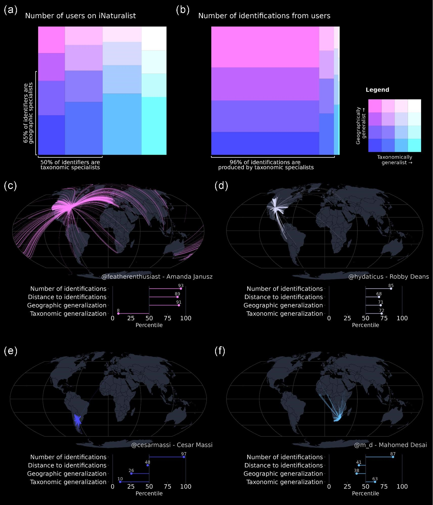
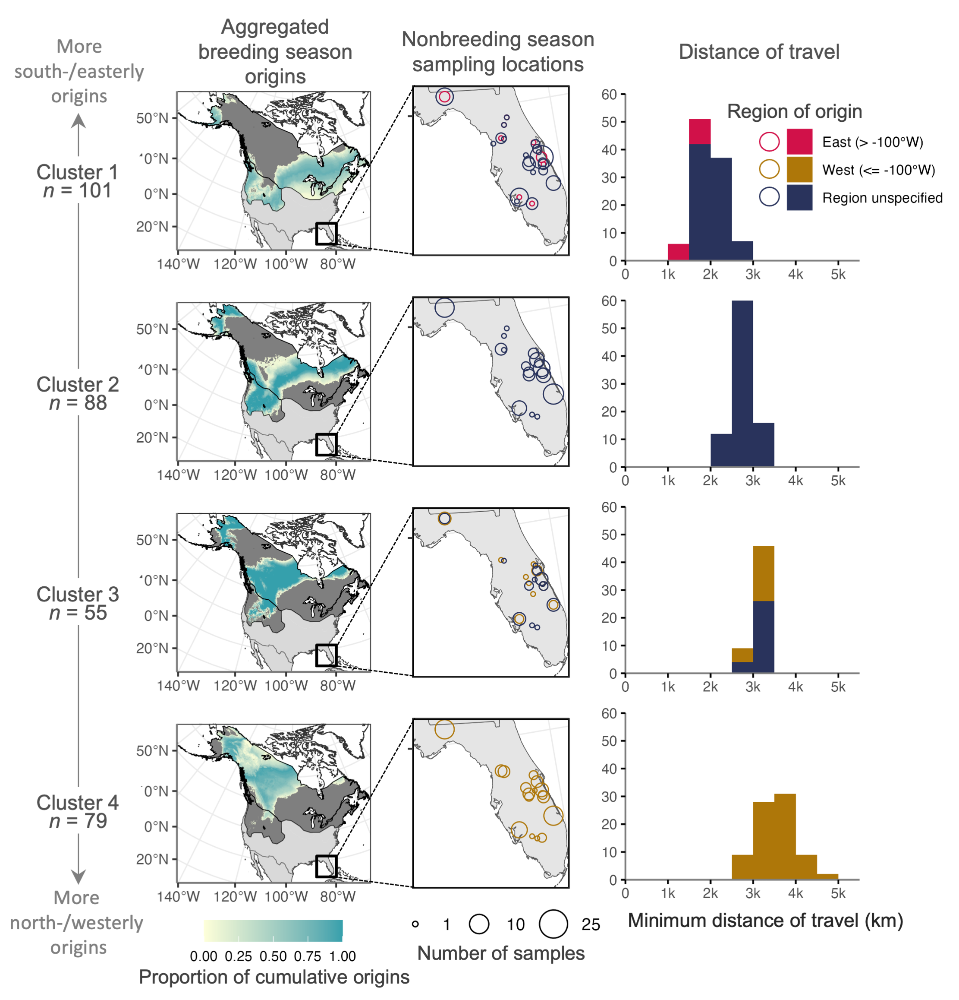

Methodological Approaches
I leverage a broad suite of methodological approaches to tackle pressing conservation challenges, with a particular focus on developing the methods needed to conduct research in under-studied systems and taxa where creative approaches are needed.
Spatial modeling
Understanding how organisms interact with, and are limited by, their environment is a central question of ecology. Correlative species distribution models (SDM) can be used to project the expected past, current, or future geographic distributions of a species based on the environmental conditions where they are known to occur. I am particularly interested in leveraging big data approaches to understand and identify animal migration at the population level given shifts in seasonal distributions.

Biodiversity informatics
The availability of biodiversity data is increasing exponentially. I research its generation and develop methods to help integrate data from multiple sources and account for data biases.

Participatory scientists at iNaturalist.org generates millions of research-grade biodiversity records through a system in which users collectively reach consensus on taxonomic identification. We explored how this process occurs and found that most identifications are driven by a small subset of highly active, expert users.
Campbell, C. J., Vijay Barve, Michael W. Belitz, Joshua R. Doby, Elizabeth White, Carrie Seltzer, Grace Di Cecco, Allen H. Hurlbert, and Robert Guralnick. "Identifying the identifiers: How iNaturalist facilitates collaborative, research-relevant data generation and why it matters for biodiversity science." BioScience 73, no. 7 (2023): 533-541. [link]
{kind=link}
Endogenous markers
Animal tissues reflect the components synthesized during their formation-- put another way, you are what you eat. Analyzing the stable isotope ratios of inert tissues like fur can reveal key insights about the past conditions under which they were synthesized, yielding information about the geographic origin and diet of an animal when the tissue was formed. I leverage stable hydrogen analysis of animal tissues with a particular interest in studying broad-scale migratory strategy, and have developed and validated new techniques to help scale our understanding from individual to population-level movements.

Carpenter, B* & Campbell, CJ*; Fanning, A; McBride, M. Extensive migratory mixing of wintering Wilson’s snipe (Gallinago delicata) highlights the need for international coordination for monitoring and management. Ornithological Applications. duae064. [ link]
Campbell, C. J.; Fitzpatrick, M.C.; Vander Zanden, H.; Nelson, D. M. 2020. Advancing interpretation of stable isotope assignment maps: comparing and summarizing origins of known-provenance migratory bats. Animal Migration. [link]
Software development
I am passionate about developing open-source software to promote accessible and reproducible science.
Maintainer
SDMetrics: Metric to Compare Temporally-Explicit Species Distribution Models. 2022.
Development: https://github.com/cjcampbell/SDMetrics
isocat: Isotope Origin Clustering and Assignment Tools. 2018.
Release: https://CRAN.R-project.org/package=isocat
Development: https://github.com/cjcampbell/isocat
Contributor
phenesse: Estimate Phenological Metrics using Presence-Only Data. 2019.
Release: https://CRAN.R-project.org/package=phenesse
Development: https://github.com/mbelitz/phenesse